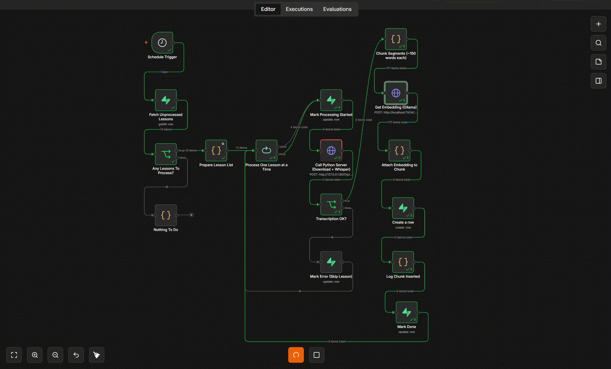

An AI tutor that speaks Bengali first.
Fixeth
The problem
Bangladeshi students learn in Bengali, but the best AI learning tools are English-first and fail them — answers in the wrong language, no local context. Quality, adaptive tutoring in Bengali barely exists.
What I built
A full AI-native learning platform, end to end. Educational video is transcribed with Whisper, chunked, and embedded into a pgvector knowledge base. A retrieval-augmented Claude layer answers student questions grounded in that material and adapts to the learner. n8n orchestrates the batch ingestion pipeline; Next.js drives the frontend; Supabase handles data and auth. Built every layer — UI, database, automation, and the AI.

The hard part
Making RAG actually work Bengali-first — retrieval quality, chunking, and answer grounding in a lower-resource language — plus a reliable video→transcript→embedding pipeline that runs unattended.
Outcome
Flagship project for THE INFINITY AI BUILDFEST 2026 EdTech Track.